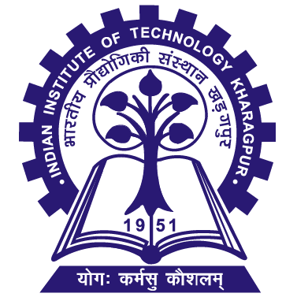

Abhinav R Cillanki | 21ME10123
Indian Institute of Technology Kharagpur
Education
| Year | Degree/Exam | Institute |
|---|---|---|
| 2023 | B.Tech, Mechanical Engineering | Indian Institute of Technology Kharagpur |
Projects and Experiences
- Winter school of AI & Robotics April'22 - May'22
- Implemented path planning using algorithms (BFS, DFS, A*, Dijkstra, RRT)
- Used Computer Vision to detect Traffic signals and generate actions according to the signs
- Link to repository is here
- Link to certificate is here
- KRSSG Software team selection tasks May'22 - June'22
- In the Path planning Task, I implemented path planning using RRT*-connect algorithm.
- The second part of this task was to implement a PID controller for a robot to follow the path. I used ROS to implement this task.
- Link to repository is here
- KRSSG Software team member(SSL) July'22 - present
- Developing strategies for the Small Sized League(SSL) robots to play the game of football using Python.
- Prodex IIT Kharagpur Website DEC'22
- Updated the website of Prodex IIT Kharagpur using HTML, CSS, Javascript and Bootstrap.
- Worked on transitioning the website to ReactJS.
- Link to repository is here
- Nehru Hall Website DEC'22
- Was a part of building the Nehru Hall Website using CSS, ReactJS.
Skills and expertise
- Programming Languages: Python, Java, C, C++, Javascript
- Frameworks and Libraries: Numpy, ReactJS, ROS, OpenCV
Positions of Responsibility
- Associate member | Prodex IIT Kharagpur Dec'21 - Present
- Strategist | The KGPian Game Theory Society April'22 - Present
- Software Team member | KRSSG July'22 - Present